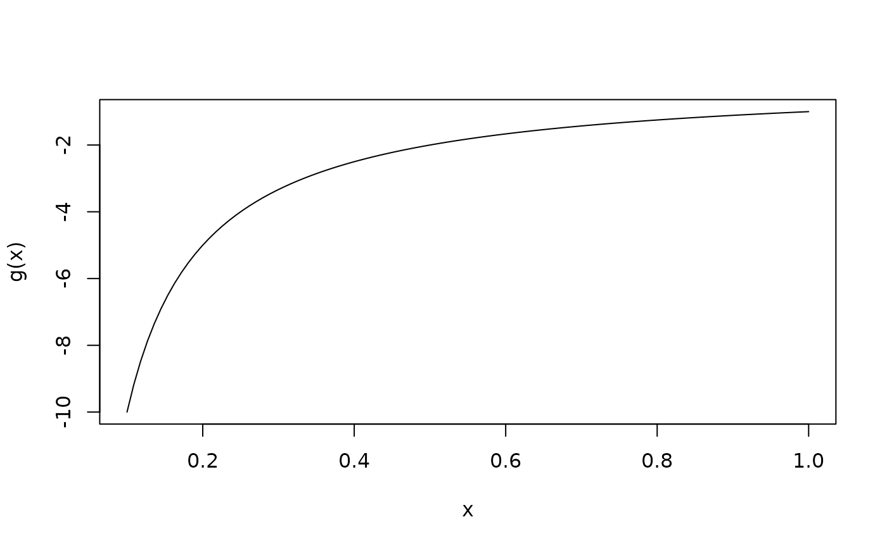
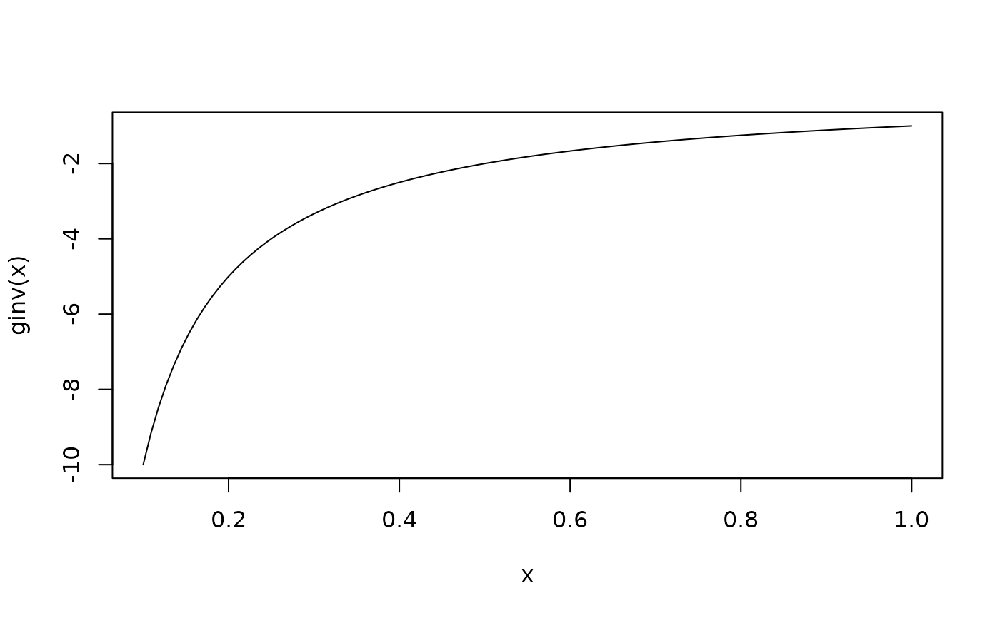

Negative inverse link function (for estimation with maxlogL object)
Source: R/LinkFunc.R
NegInv_link.RdNegInv_link object provides a way to implement negative inverse link function that
maxlogL needs to perform estimation. See documentation for
maxlogL for further information on parameter estimation and implementation
of link objects.
Details
NegInv_link is part of a family of generic functions with no input arguments that
defines and returns a list with details of the link function:
name: a character string with the name of the link function.g: implementation of the link function as a generic function inR.g_inv: implementation of the inverse link function as a generic function inR.
There is a way to add new mapping functions. The user must specify the details aforesaid.
See also
Other link functions:
log_link(),
logit_link()
Examples
# Estimation of rate parameter in exponential distribution
T <- rexp(n = 1000, rate = 3)
lambda <- maxlogL(x = T, dist = "dexp", start = 5,
link = list(over = "rate", fun = "NegInv_link"))
summary(lambda)
#> _______________________________________________________________
#> Optimization routine: nlminb
#> Standard Error calculation: Hessian from optim
#> _______________________________________________________________
#> AIC BIC
#> -280.973 -276.0652
#> _______________________________________________________________
#> Estimate Std. Error Z value Pr(>|z|)
#> rate 3.13142 0.09902 31.62 <2e-16 ***
#> ---
#> Signif. codes: 0 ‘***’ 0.001 ‘**’ 0.01 ‘*’ 0.05 ‘.’ 0.1 ‘ ’ 1
#> _______________________________________________________________
#> Note: p-values valid under asymptotic normality of estimators
#> ---
# Link function name
fun <- NegInv_link()$name
print(fun)
#> [1] "NegInv"
# Link function
g <- NegInv_link()$g
curve(g(x), from = 0.1, to = 1)

# Inverse link function
ginv <- NegInv_link()$g_inv
curve(ginv(x), from = 0.1, to = 1)
